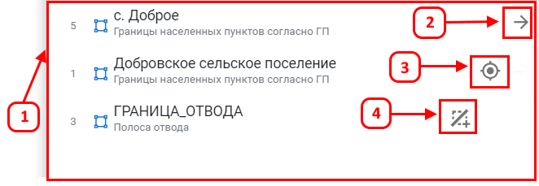
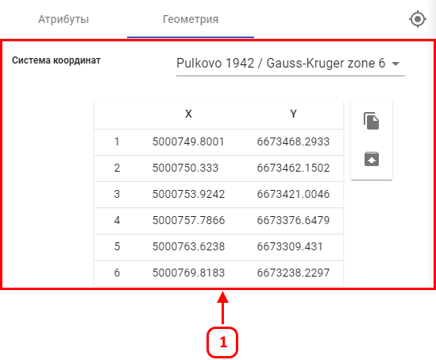
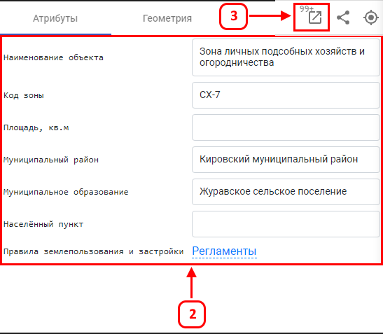
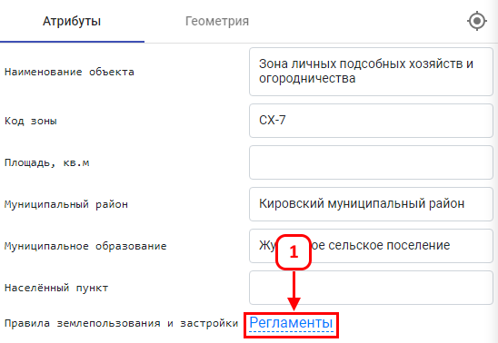
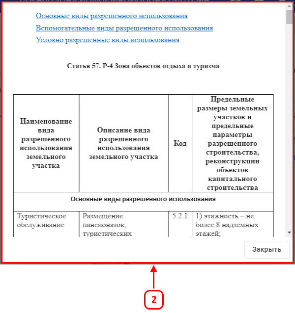

Информации об объекте
Информация об объекте отображается в отдельной панели и включает атрибутивные данные, координаты и связанные документы.
Просмотр информации об объекте
- Кликните ЛКМ по объекту на карте.
- В правой части окна откроется панель с объектами (1), расположенными в точке клика.
- Для открытия дополнительной информации об объекте нажмите (2).
- Для отображения объекта в центре карты нажмите (3).
- Для снятия выделения с объекта нажмите (4).

Дополнительная информация об объекте
- Панель содержит атрибутивную информацию (1) и координатное описание объекта (2).

Кнопка (3) позволяет выбрать проект для отображения объекта на карте.

Связанные документы
- Если к объекту прикреплены Ссылки на документы (1), они отображаются в панели.
- При нажатии ЛКМ по ссылке (1) откроется окно с информацией (2).

